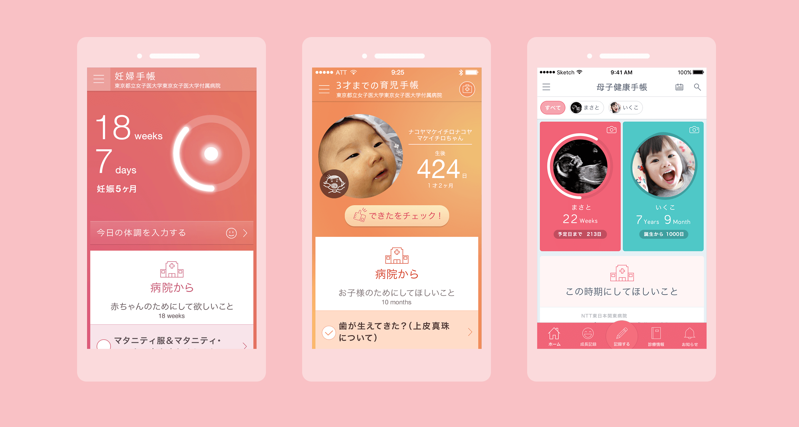
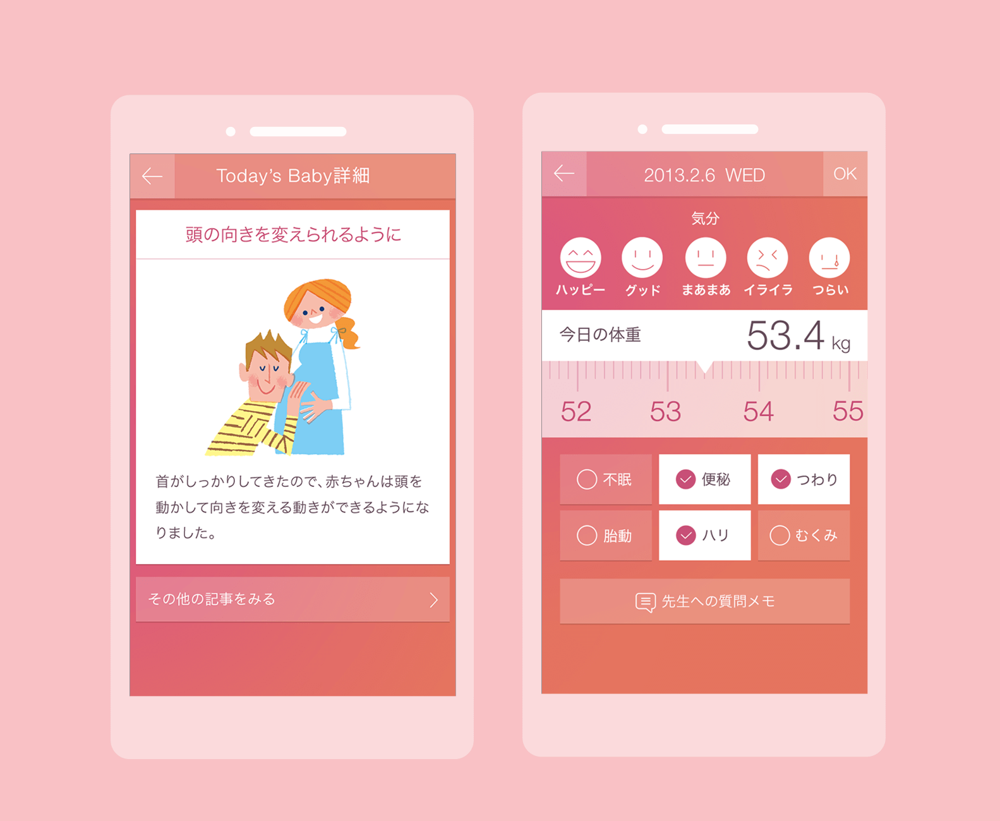
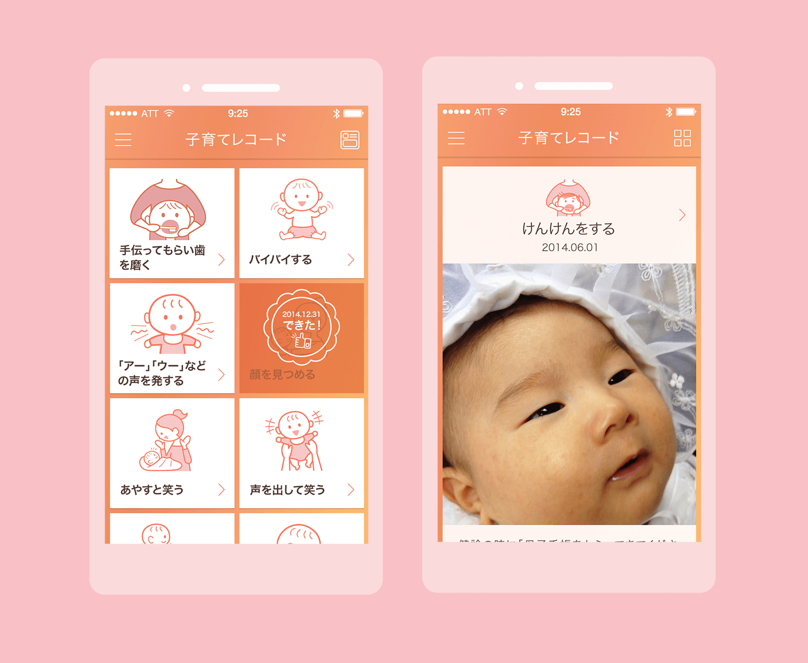
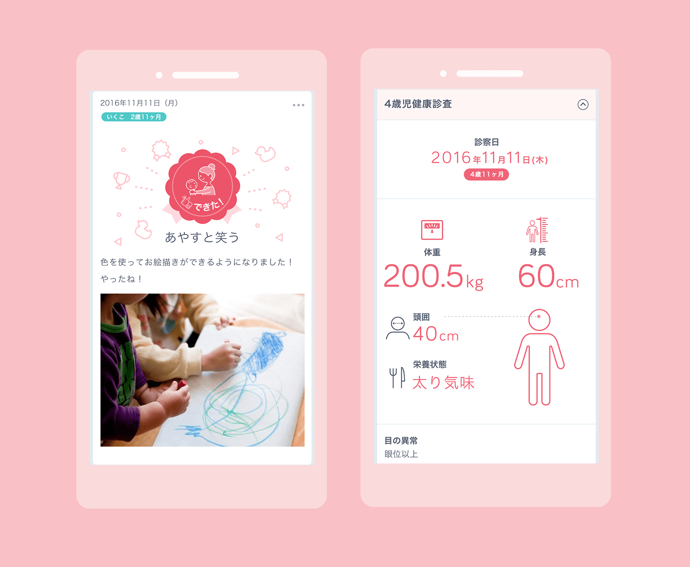
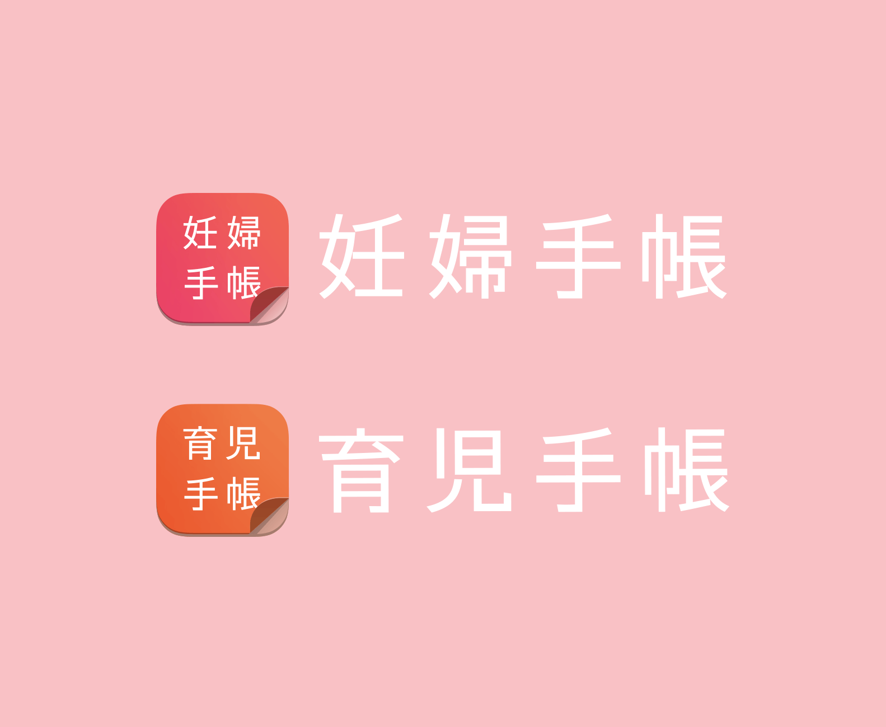

妊婦手帳・育児手帳・母子健康手帳
2014 - 2015 — 2016
APP LOGO & APP UI Design & Some of the IA
2014 - 2015 — 2016
APP LOGO & APP UI Design & Some of the IA
ユーザーに寄り添う
妊婦や育児中の母親向けラーニングサービスアプリ『妊婦手帳・育児手帳・母子健康手帳』のUIデザインと一部の情報設計とロゴデザインを担当。
育児や出産に不安を抱える『新米お母さん』をサポートし『賢い育児』ができるように、病院や自治体と連携し子育ての役立つ情報を提供します。また成長を記録できるタイムラインや緊急時に登録した連絡先にコールできる緊急連絡機能など、さまざまな施策で母子をサポートします。デザインでは遷移構造・色彩・文字やアイコンの視点から、ユーザーに不安や焦りを感じさせない設計をこころがけました。
多くの機能がもり込まれるため、今後の機能拡充も踏まえたシンプルなネスト構造を基本とした遷移設計を行っています。色彩は感情を大きく左右する要素となるため、色彩心理学を参考に穏やかな気持ちになっていただけるような色彩をUIに反映しました。文字やアイコンも同じように、取り組みでサイズやスタイリングを心がけ、柔らかい印象を与えています。

(左から)妊婦手帳 育児手帳 母子健康手帳
妊婦手帳では、胎児の成長を体感できるように、成長の週数をもとにしたサークル状のゲージで育つ過程を可視化。それがアプリのシンボルとなり、続く育児手帳、母子手帳に引き継がれます。育児手帳では、成長過程を記録し振り返るためのタイムラインを新設。写真を取り込めることでアプリのパーソナルライズ化につながる施策を行いました。母子健康手帳では、これまでの妊婦手帳、育児手帳と自治体から配布される紙媒体の母子健康手帳の機能を全て格納したアプリとなります。子供の個性をUIに反映できるカラー選択機能を追加し、更にパーソナライズ化を進めました。

胎児の状態をイラスト伝える・体重や体調、気分を記録できる (妊婦手帳)

乳児の発達をスタンプで記録・成長の過程を追体験するタイムライン (育児手帳)

育児手帳のタイムラインのデザインを刷新・子供の成長をダイアグラムにまとめる (母子健康手帳)

重要な個人情報を取り扱うプロダクトのため、ロゴやアプリアイコンではダウンロードする動機づけに定番感や安心感を訴求する必要がありました。特殊な表現は行わず、また他のアプリの中に埋もれないために、強めのカラーを配色し、賢さや真面目さが感じられるようなシンプルなタイポグラフィーを設計しました。
2014年に妊婦手帳がGooddesign賞に入賞、2015年に妊婦手帳と育児手帳がKids design Award2015を受賞しました。